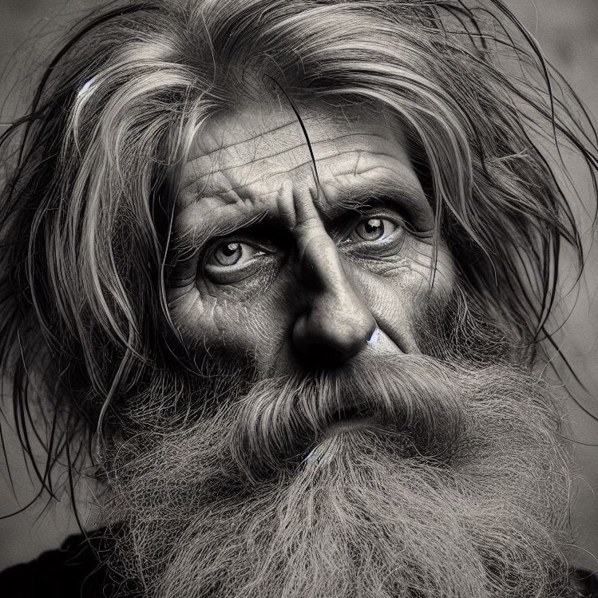

Иван Федосеевич Федосов Кокин

Крепостной крестьянин. Родился в мае 1789 г. вблизи Рязани, в сельце Качёво (которое в те дни иногда по ошибке называли Ткачёво). Является предком всех Федосовых в с. Абакумово (и позже в д. Гагинские Выселки). Фамилия Федосов образована от его же отчества.
Предки Ивана Федосеевиа по мужской линии жили в Качёве как минимум с начала XVII века и носили фамилию Кокины. Когда родился Иван, это сельцо входило в состав Рязанского уезда и одноимённого наместничества, а на престоле ещё находилась императрица Екатерина II.
Всю свою жизнь Иван Федосеевич находился во владении помещиков. Так, при его рождении владельцем был престарелый полковник Николай Иванович Маслов. А когда в 1792 г. тот умер, семью Ивана выставили на аукционные торги, и их помещиком стал Алексей Петрович Гагин (годы жизни 1756-1832). Новый барин переселил семью в своё поместье — с. Абакумово. После смерти Гагина крестьяне перешли на наследству его вдове Анне Николаевне, а позже и их сыну Петру Алексеевичу (умер начале 1860-х), а также внучке Анне Алексеевне. Таким образом Гагины владели семьёй Федосовых вплоть до отмены крепостной зависимости.
Летом 1804 г. за 15-летнего Ивана выдали крестьянку Агафью Евстратовну. В тот же день выдали замуж за односельчанина и старшую сестру Ивана, Ирину Федосеевну (в замужестве Тутова).
Что же касается невесты Ивана, она, по всей видимости, не была родом из Абакумова, но, вероятно, также принадлежала помещикам Гагиным. Иван и Агафья стали родителями как минимум десяти детей, в том числе восьмерых сыновей. Их имена: Семён (ок. 1807-1818), Илья (1809-1858+), Иван (ок.1814-1818, умер от оспы), Филипп (1816 — до 1818), Прокофий (ок.1819-1858+), Анисим (ок.1821-1894), Николай (1824-1832, от оспы) и Ивлий (ок. 1827-1858+). Из них, однако, только четверо достигли зрелости и создали свои семьи. Именно благодаря этим наследникам Иван Федосеевич значительно умножил род своего отца — Федосея Прокофьевича — и увековечил его имя вплоть до нашего времени. Также у Ивана и Агафьи было как минимум две дочери: Анна (1822-ок.1824) и Василиса (1829).
Вместе супруги прожили не меньше 30 лет, однако в 9-й ревизской сказке 1850 г. Иван Федосеевич упоминается уже как вдовец. Примечательно, что уже в те годы за ним и его потомками докуметально закрепилась фамилия Федосов.
Судя по тому, что по последней ревизской сказке 1858 г. Иван Федосеевич был уже в довольно пожилом возрасте, умер он, возможно, уже вскоре после этой переписи. Тем не менее его жизнь продлилась не меньше 70 лет, и он успел увидеть не только множество своих внуков, но, возможно, даже правнуков.